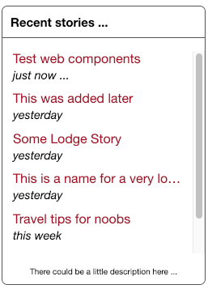

Web Components: The Basics
Ever since one of the teams I worked with was using Web Components I was intrigued. Taking the rewrite of a web site as an excuse, I finally got around to learn how to implement and use them.
The Problem to Solve
For the new web site I want to have a feature that shows readers the last few stories that they viewed and enable them to go back and look at them again. Since the site will be a static site, encapsulating the view and functionality was important to not copy/paste code all over the place.
On a former job, a team was using web components, and a brief look at Can-I-Use for web components showed that for the web site under consideration, web components, HTML templates and shadow DOM are supported in browsers for 99% of the site’s traffic/visitors. Here is a visual of what I’m about to develop:

From this screen grab, the following features are discernable:
- A link to a web page, with the page title shown
- Long page titles are truncated with ellipses
- The last access time is displayed in human-readable form
- Content will be scrollable
So here we go! You can go along and/or look at the code on Bitbucket.
Rendering Some Output
The first step consists in setting up the web component and getting something rendered
on the page when it is included on the page. Here is the HTML to embed an instance
of the web component last-viewed into a HTML document:
<div class="sidebar" style="width:150px">
<last-viewed></last-viewed>
</div>Note: The explicit closing tag is required for web components, so you can’t write the same as you could normally with self-closing tags like
<last-viewed />.
Now that we have used an unknown tag, we need to go and set up our web component. In this first step, I’ll define one and set up some basic rendering. Here is the JavaScript code to define a web component and get something rendered — The details of how the various functions generate the HTML used in this snippet are not important for this discussion, so I will skip discussing the details. I’ll have more to say about the rendering later.
class LastViewedStories extends HTMLElement {
shadowRoot = null;
constructor() {
super();
this.shadowRoot = this.attachShadow({mode: 'open'})
const storyListContainer = this.renderContainer();
const documentPageList = this.renderLinksFor(previousPagesViewedList);
storyListContainer.appendChild(documentPageList);
this.shadowRoot.appendChild(storyListContainer);
}
renderContainer() {
const container = document.createElement('section');
container.setAttribute('class', 'recent-articles__box');
return container;
}
...
}
customElements.define('last-viewed', LastViewedStories);There are a few lines in this code, which warrant comment:
Line 1: Web Components extend a base class with the desired behavior and features. While I’m using
HTMLElementhere, one could extend off more specific elements such asHTMLSelectElementto inherit specific behaviors.Line 6: Since we’re extending, we need to call the extended class’ constructor
Line 7: We can use an approach called Shadow DOM for web components to make them more robust:
It introduces scoped styles to the web platform. Without tools or naming conventions, you can bundle CSS with markup, hide implementation details, and author self-contained components in vanilla JavaScript.
Lines 9-11: Take care of rendering the web component’s HTML
Lines 15-19: An example of how one could render the HTML for the component
Line 24: So far
LastViewedStoriesis just a class. We’ll turn this class into a web component in line 24 and assign the class the tag namelast-viewed. It is mandatory for web components to contain at least one hyphen to avoid collision with standard HTML tags, current or future ones.
Simplifying the HTML Generation and Slots
In the previous section, I built the HTML very laboriously using JavaScript in functions
like renderContainer(). While some use of createElement is unavoidable, building an
entire DOM tree that way is unnecessary. The following snippet uses a predefined
class constant to hold HTML and attach it to an element via an element’s innerHtml
property (on line 12):
template = '<div>' +
'<h3>Recent stories ...</h3>' +
'<slot name="story-list" id="list-slot"></slot>' +
'<p class="auxiliary-copy">There could be a little description here ...</p>' +
'</div>';
...
renderContainer() {
const container = document.createElement('section');
container.setAttribute('class', 'recent-articles__box');
container.innerHTML = this.template;
return container;
}Line 3 sports a <slot> tag, which is a tag provided by the Web Components API. it is a
placeholder into which a programmer can fill markup from outside the web component. The
markup to be included needs to be inserted in between the Web Component’s tags and the
top-level HTML tag needs to have a slot attribute specifying the name. So for the
following HTML, the Browser would display a list consisting of an ordered list with three
items with content “one”, “two” and “three” respectively.
<last-viewed>
<ol slot="story-list">
<li>one</li>
<li>two</li>
<li>three</li>
</ol>
</last-viewed>There are more scenarios that the <slot> syntax supports, which are summarized
in the Google Developers page
on the shadow DOM. The main take-away is that <slot> permits the population of web
components with static HTML at predefined points in the HTML, thus making the component
more versatile to display different main content. An example might be to permit the
display of the three different HTML lists, ordered, unordered and definition lists.
Rendering Content in Slots With JavaScript
Using slots to populate components from HTML markup is a nice feature, but
for my purposes, I want to dynamically update the list, in particular the time since a
page was last accessed needs to be updated every minute. Thus, using a JS timer, we query
the storage every few seconds and update the content in <slot> accordingly.
interval;
constructor() {
...
this.interval = setInterval(this.reloadAndRerender.bind(this), 60000);
}
reloadAndRerender() {
const slotElement = this.shadowRoot.getElementById('list-slot');
const updatedEntries = this.renderLinksFor(this.loadStoredList());
slotElement.innerHTML = '';
slotElement.appendChild(updatedEntries);
}We set an interval in the constructor, repeatedly calling the reloadAndRerender()
method. That method then retrieves a reference to the slot via the specified ID,
renders the new content from the stored data and clears the DOM inside
using innerHtml = ''. As the final step, the method inserts the generated HTML on
line 12.
With all the heavy lifting of rendering the individual list entries and aggregating them to a list and HTML tree done in the background, the actual process of changing out the DOM is quick and unnoticeable.
Using both HTML and JavaScript for slot
Can you use both mechanisms to populate slots, or asked another way: Is it possible to
set a default in the HTML using the slot mechanism and overwrite that from JavaScript?
First attempts to do that failed: Even though the code to update the slot is called
and executed, the view does not update when we try to overwrite the HTML content in <slot>
with a naïve approach such as using the shown JavaScript code with HTML nested in
the <slot>…</slot> tag pair.
A look at the debug tool shows that the HTML structure for using the HTML population
looks different between the two approaches — It appears that the HTML version does
not insert the HTML children under <slot> but instead attached them to another place
in the HTML, away from the slot:
I’ll update this or create another post if I find a way to make this work using the HTML as a default that can be overwritten from the JavScript side if needed.
Styling the Component
Web Components are self-contained, as the previous quote suggests. That means that we can
specify CSS rules within the component and not have component-styles be affected by styles
on the page and vice versa. The specification of styles within a web component can occur
either by creating a style tag from JavaScript with the requisite style rules attached
as a text node or by adding a <style> section to the template markup for the web
component, as outlined for the component’s HTML in
“Simplifying the HTML Generation”
To create the styling without extending the component markup, one can create a function setting up the required styles and invoke that function in the constructor of the web component (we’ll see another way in a subsequent post). The setup would look like this:
Talk about the CSS not spilling outside of the component
constructor() {
super();
this.shadow = this.attachShadow({mode: 'open'})
...
this.shadow.appendChild(this.returnStyling());
this.shadow.appendChild(storyListContainer);
}
returnStyling() {
const styleElement = document.createElement('style');
styleElement.setAttribute('type', 'text/css');
styleElement.textContent = '
.recent-articles__box {
border: 1px solid #555;
border-radius:7px;
padding:0px;
min-width:250px;
}
...
'
}This little snippet shows that we have created a method to generate the requisite method to generate the CSS and then invoke that method from the constructor. This approach also allows for the inclusion of dynamically changing style parameters — maybe an element should be styled according to the available screen real estate. In JS, we have the opportunity to measure the available dimensions and then dynamically adjust the height of an element, for example.
It is noteworthy here that we should include the <style> before the markup, as done here,
to rule out a “flash of unstyled content.”
Rerendering the Component
Since in this example we deal with periodic re-rendering of the list content to update the timing information, we’ll have to make sure of three things:
- The old content gets removed and replaced with new content, not new content appended,
- the update should be instantaneous or at least fast enough to not be noticeable and
- any scroll position should be preserved because otherwise, the list display jumps to the top at seemingly arbitrary points in time.
The method reloadAndRerender() in the following example implements the solution to
these three concerns.
constructor() {
...
this.interval = setInterval(this.reloadAndRerender.bind(this), 60000);
}
reloadAndRerender() {
const slotElement = this.shadowRoot.getElementById('list-slot');
const updatedEntries = this.renderLinksFor(this.loadStoredList());
const listOffset = this.shadowRoot.getElementById('list-root-element').scrollTop;
slotElement.innerHTML = '';
slotElement.appendChild(updatedEntries);
slotElement.childNodes[0].scrollTop = listOffset;
}In the first 2 lines, reloadAndRerender() gets a reference to the <slot> element
via the id set on the tag (line 1), then loads the data to be rendered from localStorage
and generates the HTML markup for the list of links in the element (line 2).
In line 3, it stores the current scroll offset, so that we can reset it after the new list has rendered.
The rest of the method is fairly mundane: We clear the HTML from within the <slot>,
append our new HTML list and then reset the vertical scroll position. With this code
in place, the list gets replaced and reset so that upon changing the markup no noticeable
visual shift will occur, but the times under the link names will have updated — again
instantaneously because of the show DOM in use here.
Summary
In this post, I have taken a quick overview of the main features of web components and the corresponding features in shadow DOM. Both techniques are by now well-supported by the major browsers and are ready for use.
This code still has some issues and can be improved upon, but that’ll be the topic of another post in the near future.